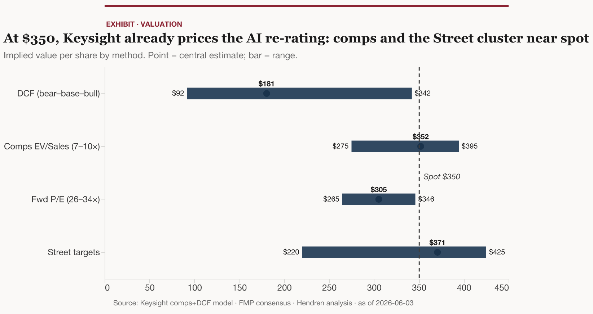
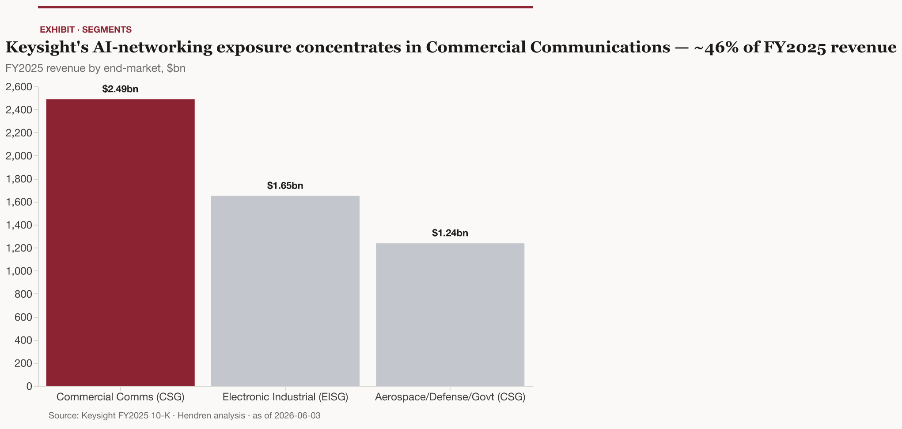
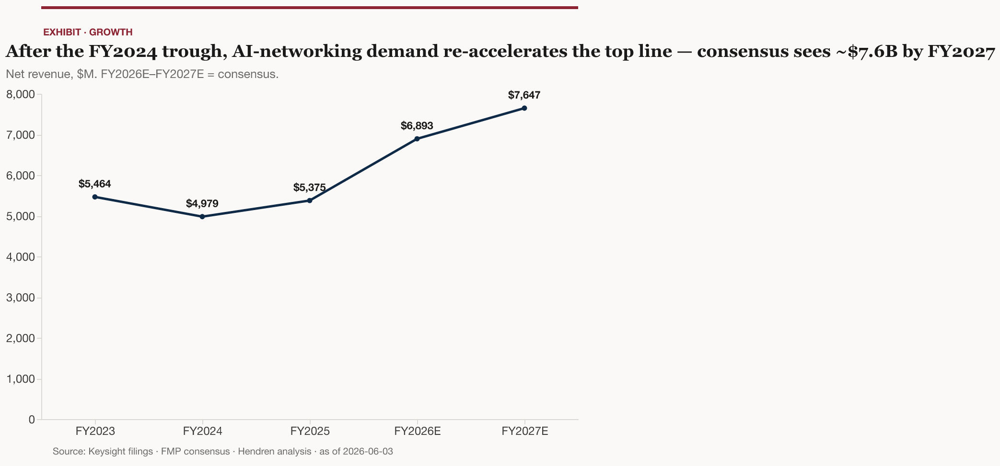
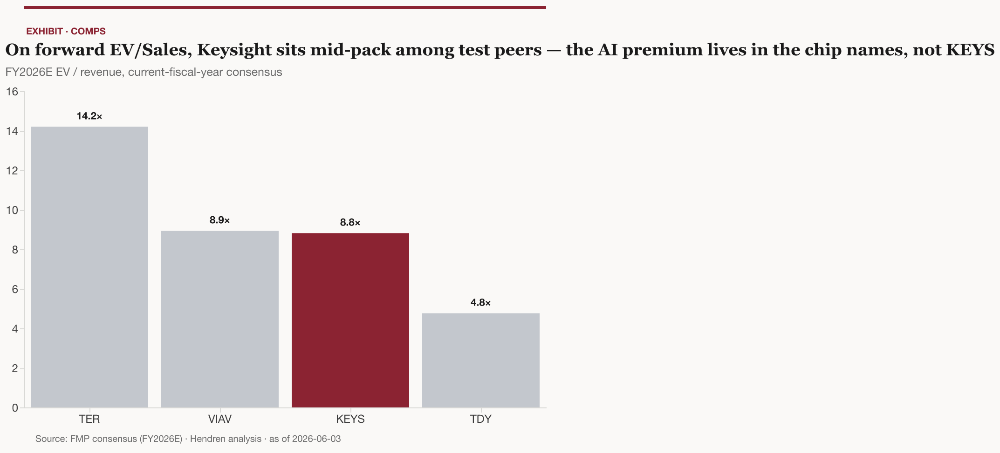
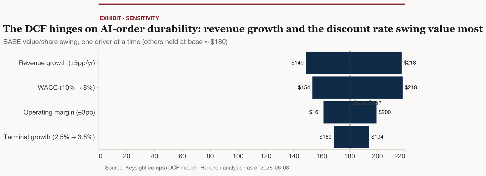

Analyst note · 2026-06-03 · AI-infrastructure / networking-interconnect lens. Indicative; not a recommendation to transact. Valuation figures tie to the linked model keysight-keys-comps-dcf_v1_2026-06-03.xlsx.
Stance: high-quality, genuine AI-networking beneficiary — but fully valued at ~$350. Keysight is the closest thing the public market offers to a toll on the complexity of AI networking. It does not sell switches, optics, or accelerators; it sells the instruments and emulation software that validate every new interconnect standard and speed grade before it ships into a production AI cluster. That is a real, compounding exposure to the AI buildout — and the most recent quarter proves it is converting: Q2 FY2026 (the quarter ended 2026-04-30) was the strongest in company history, with revenue of $1,717M, up 31% year-over-year 1, and a record $2,051M of orders, up 56% 1. Management sized the AI-related business at roughly $500–600M in the first half of FY2026 alone 2 — already more than it booked in all of FY2025 2. The thesis works.
The catch is price. The stock has roughly doubled off its ~$183 level at the October-2025 fiscal-year close to ~$350 today 3, a re-rating that has already capitalized the AI story. On the cleanest comparable lens — forward EV/Sales — Keysight at ~8.8× 3 sits essentially in line with its test-and-measurement (T&M) peer median, not at a discount; the Street’s consensus 12-month target of $371 3 implies only ~6% upside; and the model’s bull-case discounted-cash-flow (DCF) value barely reaches today’s price (model Outputs). The conservative 5-year DCF lands well below spot — which is itself the message: at $350 you are paying for the AI tailwind to be durable, not cyclical.
(Test & measurement — instruments, software, and services used to design and validate electronic systems. Communications Solutions Group (CSG) and Electronic Industrial Solutions Group (EISG) are Keysight’s two reportable segments; defined in §3.)
The three load-bearing reasons we hold rather than chase:
The mechanism is standards churn, not buildout dollars. Keysight’s AI revenue is leveraged to the rate at which networking standards and speeds turn over — 800-gigabit-per-second (800G) Ethernet to 1.6-terabit (1.6T) to 3.2T, 112G to 224G SerDes (the serializer/deserializer circuits that move bits on and off a chip), and the multi-vendor protocol wars (open Ethernet vs. proprietary InfiniBand, plus UALink, PCIe, and CXL). Each transition re-opens a validation cycle. This is a more durable lever than a one-time capex pop, and §4 shows why.
The agentic turn extends, not dilutes, the thesis. As agentic and inference workloads push more traffic east-west across the fabric and raise the bar on lossless, low-latency behavior (§5), the surface area of interfaces and protocols that must be conformance-tested grows — lengthening the runway for validation demand.
Quality is real and self-funded. ~40% of revenue is software and services 4, ~31% recurring 4, gross margin is in the low-60s on a GAAP basis 5, and the balance sheet is lightly levered. Keysight bought back $377M of stock in FY2025 and authorized a fresh $1.5B 55 — so the AI optionality is free-carried by a profitable core, not financed by dilution or leverage, which lowers the cost of being early to the wrong standard.
What would change our mind (developed in §9): two more quarters of order growth sustained anywhere near the +56% pace 1 with AI explicitly cited as the driver would argue the re-rating is a floor, not a ceiling, and push us to buy; conversely, a single quarter in which the order surge reverses and management reframes it as a pull-forward would confirm the bear and the downside the conservative DCF flags.

(a) Keysight is not a “services business” — and that matters for how it wins. The instinct to file Keysight under recurring-revenue software-and-services compounders is half right and half misleading. Products are ~76% of revenue ($4,063M of $5,375M in FY2025) and services ~24% ($1,312M) 555. Software-and-services together are ~40% of revenue and recurring revenue ~31% (per the Q1-FY2025 call) 44 — a genuinely higher-quality slice, but not the AI lever. The AI lever is the product-plus-software test systems — the oscilloscopes, bit-error-rate testers, optical analyzers, and workload-emulation platforms that get bought when a new standard arrives. If you model Keysight as a services annuity, you will under-weight the very cyclicality (and upside) that AI-networking standards churn creates.
(b) Spirent did not buy Keysight into AI-Ethernet test — the data-center-Ethernet test line went to the rival. The market reads the £1.16B / ~$1.46B Spirent acquisition (closed 2025-10-15) 666 as Keysight buying its way deeper into data-center networking test. The opposite is closer to true. As an antitrust remedy, Keysight was forced to divest Spirent’s high-speed-Ethernet, network-security, and channel-emulation lines — to Viavi, the bidder it had outbid — for $399M 567. Keysight kept Spirent’s positioning/GNSS, satellite-orbit emulation, and network-assurance assets 8 — valuable, but adjacent to the AI-networking core, and a fraction of Spirent’s ~$460M of FY2024 revenue 8 once the divested lines are stripped out. Two consequences the consensus underweights: first, Keysight’s AI-networking test strength is organic, built on the former Ixia line and the new “Keysight AI” (KAI) platform (§6), not bought; second, the AI-Ethernet test moat is now genuinely contested — Viavi, which acquired those divested assets, is itself growing its network-and-service-enablement revenue more than 40% year-over-year post-deal, with the Spirent business a meaningful (if not sole) driver 9.
(c) The leverage is to complexity, not to capex. The bull frame (“AI data-center capex is enormous, Keysight sells into it”) is directionally right but lazy. Keysight captures a thin, high-margin slice tied to how often the interconnect stack changes shape — not to the gross dollars spent on GPUs and switches. That distinction is the whole investment case, because it explains both the durability (standards keep churning) and the risk (if the cadence slows, or copper holds the line against optics, the re-validation cycle cools — §4, §9).
The analytical key to Keysight is where its AI exposure sits — and it sits in one bucket. CSG Commercial Communications was ~46% of FY2025 revenue ($2,488M 5), and the FY2025 10-K labels that end-market’s “wireline” component the “data center ecosystem” 5 — i.e., data-center networking, the line carrying the 800G/1.6T Ethernet test demand. Everything else is ballast around that lever. Structurally, Keysight (the former electronic-measurement arm of Hewlett-Packard / Agilent, spun out in 2014) reports two segments: CSG (Communications Solutions Group) — $3,726M, ~69% of revenue 5 — splits into Commercial Communications ($2,488M 5, wireless + wireline) and Aerospace, Defense & Government ($1,238M 5); EISG (Electronic Industrial Solutions Group) — $1,649M, ~31% 5 — covers automotive/energy, semiconductor, and general electronics.
Beyond that primary bucket, there is a secondary AI pull in EISG’s semiconductor end-market, where Keysight’s chip-design and parametric-test tools ride AI-chip development 5 — but Commercial Communications is where the networking thesis lives.

The driver, then, is not “total revenue” but Commercial-Communications growth, and it has inflected hard. That end-market grew +13% year-over-year in Q3 FY2025 as 400G/800G transceiver build-out accelerated 10; +33% in Q1 FY2026, which management tied directly to customers “expanding 400G/800G/1.6T transceiver manufacturing capacity to meet rising demand for AI” 11; and CSG overall grew +35% in Q2 FY2026 1. This is the operating signature of a standards-transition cycle running through the income statement.
Two structural features make the franchise worth more than a cyclical equipment vendor. First, the software-and-services and recurring layers (~40% and ~31%, per the Q1-FY2025 call 44) smooth the instrument cycle and carry higher margins — services gross margin runs in the high-60s. Second, Keysight’s R&D intensity — $1,007M, ~19% of revenue in FY2025 5 — is what keeps it first-to-market on each new standard, which (as §4 argues) is the entire source of its pricing power in a churn-driven model.
Keysight’s AI revenue is leveraged to the rate at which networking standards turn over, not to the dollars of capex — and that cadence is unusually fast right now. This is the part most reports get backwards, so it is worth building in two steps: the macro the networking layer is experiencing, then why a test business specifically benefits from it.
The networking layer is the most-leveraged tier of AI capex, and it is churning unusually fast. Goldman Sachs sizes the aggregate optical-networking total addressable market (TAM) growing roughly 9× — from ~$15B in 2026 to ~$154B in 2028 — across scale-up and scale-out 1212. (Scale-up = the high-bandwidth fabric inside a rack/computing unit; scale-out = the data-center-wide network connecting them.) The dollar content of networking per computing unit rises ~29× across that GPU-generation transition 12. But the magnitude is not what drives a test business — the cadence of change is. Optical lane speeds are migrating 800G → 1.6T → 3.2T inside a roughly three-year window (1.6T modules were ~11% of volume in Q4 2025 13 and move into the mainstream across 2027–2028, reaching ~35% of volume by 2028, with 3.2T at mass volume thereafter 1313). SerDes is stepping 112G → 224G 14. The physical medium is fracturing into copper (direct-attach and active cables), pluggable optics, and co-packaged optics (CPO — optics integrated beside the switch silicon to cut power) 1512. Each variant must be independently characterized.
The structural tailwind for test specifically is open-standards proliferation. NVIDIA’s InfiniBand is a closed, single-vendor stack that largely self-validates; its open challengers are inherently multi-vendor and therefore cannot assume interoperability — it must be tested, at every interface, by an independent third party. Those challengers are arriving at once: the Ultra Ethernet Consortium (UEC) published its Specification 1.0 in 2025 — a multi-vendor, ~560-page stack spanning network-interface cards, switches, optics, and cables, explicitly aimed at making Ethernet competitive with InfiniBand for AI 16. The gap is narrowing fast — merchant Ethernet switch silicon now reaches 102.4-terabit-per-second capacity (Broadcom’s Tomahawk 6) 17, and the open stacks are closing the historical latency gap with InfiniBand 18 — which is precisely why open Ethernet is credible enough to win share, and therefore why multi-vendor interoperability test becomes a structural need rather than a niche. UALink targets the scale-up domain (up to 256 accelerators in one coherent fabric) 19. PCIe and CXL govern the chip-to-chip and memory-fabric layers. Keysight’s management has been explicit that this — the speed roadmap and the standards stack — is what it sells into: the CEO framed “all of those interconnects… going at a rapid pace from 112 to 224 to 448” as requiring “a lot of high-precision testing because of the cost of failure… in an AI cluster” 4, and has repeatedly named CXL, the Ultra Ethernet Consortium, PCIe Gen-7, and 1.6T as the demand drivers 20.
Put plainly: churn is the test thesis, and churn is robust. Every new speed grade, form factor, and protocol re-opens a design-validation cycle (in R&D) and then a manufacturing-test cycle (in production). The more vendors, the more interoperability that must be proven rather than assumed. Keysight’s own product cadence maps directly onto this: the KAI architecture spans four suites — Data Center Builder (AI-workload emulation), Compute, Interconnect (electrical/optical paths up to 1.6T), and Network 2122; the AresONE 1600GE platform (March 2026) emulates 1.6T Ethernet AI workloads over 224G SerDes and integrates the Ixia IxNetwork engine 2323; 224G optical and electrical test supports the IEEE 802.3dj standard for 1.6T transceivers 14; and scale-up validation already covers UALink 200G, PCIe 7.0/6.0/5.0, and CXL 3 24. The proof point that the open-Ethernet bet is converting: at the OFC 2026 conference Keysight ran an industry-first Ultra Ethernet interoperability demonstration at 800G with Broadcom’s Tomahawk Ultra switch 25.
The bear inside the mechanism. The thesis depends on the optical/standards cadence staying fast. The most credible counter is copper’s persistence: LightCounting estimates copper cabling still accounts for ~50% of the 1.6T interconnect market through 2029 26. A more copper-weighted, slower-optical transition would mean fewer new high-speed optical interfaces to validate and value shifting toward cable/substrate vendors rather than the optical-test cycle. We weight this as a real but partial offset — copper and optics both churn, and both need test — but it caps the upside on the optical-acceleration framing.
Agentic AI is where the thesis gets its duration. The claim: agentic and inference workloads change the shape of data-center traffic — pushing far more orchestration and east-west flow onto the fabric — in ways that add, not subtract, validation demand over time.
The mechanism is a compute-mix shift. Agentic systems — models that call tools, retrieve documents, write and execute code, and chain steps — spend a surprising share of wall-clock time not on GPU inference. SemiAnalysis measured ~42% of an agentic coding session’s runtime on CPU-bound tool work (file edits, shell commands, linters) rather than GPU compute 27. That CPU work is overwhelmingly network input/output — API calls, retrieval, storage access — so the effective CPU-to-GPU ratio rises and the orchestration layer becomes a “CPU + NIC + DPU” stack — a CPU plus a network-interface card (NIC) and a data-processing unit (DPU) that offloads the networking 28. Arm sizes the shift bluntly: from ~30 million to ~120 million CPU cores per gigawatt of data center, moving from the LLM era to the agentic era 29 — a re-rating of the CPU:GPU ratio that Intel and industry trackers corroborate as rising materially in agentic deployments 3031. More orchestration means more east-west traffic (server-to-server, rather than north-south to the user) riding fabrics that already move enormous bandwidth — Microsoft’s Fairwater design specifies ~1.8 terabytes per second of GPU-to-GPU bandwidth per rack 32.
For a test business, two second-order effects follow. First, more east-west and collective-communication traffic raises the bar on lossless, low-latency conformance — the corner cases that must be validated (congestion control, in-order delivery, link-level retry) multiply, and they are exactly the behaviors UEC’s specification formalizes for multi-vendor Ethernet 16. Second, the workload itself becomes something to emulate: Keysight’s KAI Data Center Builder exists to emulate high-scale AI workloads (training and inference traffic patterns, collective operations) so operators can validate a fabric before committing capital 224. As agentic traffic patterns evolve and standardize, the emulation target keeps moving — which is recurring validation work, not a one-time sale.
The honest caveat: this is the softer, longer-dated part of the thesis. The agentic-traffic literature is early, the CPU-mix numbers are directional rather than audited, and none of it yet appears as a named revenue line. We treat it as duration insurance on the §4 mechanism — a reason the standards-churn cycle should persist beyond the current 800G→1.6T wave — rather than as a near-term catalyst.
Keysight’s moat in AI-networking test is first-mover breadth across an exploding standard set, anchored by the Ixia network-emulation franchise it acquired in 2017 and has since folded into the wireline business 20. The moat is real but, post-Spirent, no longer uncontested.
The peer map. In broad electronic test, the closest public comparables are Teradyne (TER), which skews to semiconductor test, Viavi (VIAV) in network and optical test, and Teledyne (TDY) in diversified instrumentation. The Japanese houses Advantest and Anritsu and the private Rohde & Schwarz round out the global set. In AI-networking test specifically, the contest narrowed in 2025: the antitrust-mandated sale of Spirent’s high-speed-Ethernet test line to Viavi 7 hands a credible rival a directly competitive franchise — and Viavi’s network-and-service-enablement revenue is growing more than 40% year-over-year post-deal, with the acquired Spirent assets a meaningful contributor 9. So the read is nuanced: Keysight retains the broadest organic portfolio (KAI across compute/interconnect/network, IxNetwork, 224G optical, scale-up protocol test), but it gave up an inorganic path to consolidate the Ethernet-test niche and now shares it.
Why the moat still holds. Three reasons it is durable even with Viavi in the ring. First, breadth: validating an AI cluster end-to-end requires test across electrical (SerDes/BERT), optical (transceiver/CPO), protocol (Ethernet/UEC/UALink/PCIe/CXL), and workload-emulation layers — Keysight is the rare vendor present in all of them 212414. Second, first-to-market on each standard, funded by ~19% R&D intensity 5 — the OFC 2026 800G UEC interop demo with Broadcom is the current evidence 25. Third, switching costs and reference status: once a chipmaker, switch vendor, or hyperscaler validates a generation on Keysight’s tooling and test methodology, the next generation tends to stay, because the comparability of results matters. The competitive risk is therefore less “loses the category” than “shares a faster-growing niche and defends share with R&D dollars.”
The trajectory inflected after a FY2024 trough. Revenue fell to $4,979M in FY2024 5 in the post-pandemic instrument down-cycle, recovered to $5,375M in FY2025 (+8%) 5, and is now re-accelerating sharply: consensus models ~$6,893M for FY2026 (~+28%) 3 and ~$7,647M for FY2027 3. The order book leads revenue — total FY2025 orders were $5,452M 5, Q1 FY2026 orders +30% 11, and Q2 FY2026 orders a record $2,051M, +56% reported and +48% on a core basis (excluding acquisitions and currency) 12 — orders outrunning revenue by ~25 points, which means backlog is still building and the FY2026–27 consensus ramp has order coverage behind it, not just optimism.

Q2 FY2026 — the cycle is converting. The quarter’s signal is breadth and quality at once: revenue +31% (+24% core) 12 with both segments contributing — CSG $1,231M, +35%, and EISG $486M, +24% 11 — non-GAAP EPS up 69% to $2.87 1, and record free cash flow of $472M 1. This is what an order-led standards cycle looks like once it reaches the income statement.
Two details matter for the model. First, margin quality: GAAP EPS was $2.02 1, and the results included a one-time tariff refund that flattered the GAAP gross margin — so the cleaner read is the segment operating margins, with both CSG and EISG running at ~33% in the quarter 11, i.e., the business now operates on a 30%-handle margin. Second, forward visibility: management raised guidance to a ~$1,740M Q3 revenue midpoint and ~$2.46 non-GAAP EPS 11, with acquisitions (chiefly Spirent) expected to add ~$375M of FY2026 revenue and >$100M of cost synergies 22.
Capital allocation is shareholder-friendly and self-funded. Keysight pays no dividend; it returns cash through buybacks ($377M repurchased in FY2025, a fresh $1.5B authorization in November 2025) 55 and funds M&A from cash flow. Beyond Spirent, it closed the $578M acquisition of Synopsys’ Optical Solutions Group — optical/photonic design software that pulls Keysight earlier into the optical design-and-validation workflow (where co-packaged optics and silicon photonics are headed), though not yet large enough to move the valuation 5. The balance sheet carries $1,873M of cash against $2,550M of senior notes at FY2025 year-end (net debt ~$0.7B, comfortably under 1× EBITDA) 55; record Q2 free cash flow 1 has since reduced net debt further, leaving enterprise value (~$60.5B 3) almost entirely equity.
At ~8.8× forward EV/Sales 3, Keysight trades at its own peer median — so the AI premium is paid for, not available: comps, the Street, and even the bull-case DCF all cluster around spot, and only the conservative base DCF sits materially below. (All figures tie to the linked model keysight-keys-comps-dcf_v1_2026-06-03.xlsx, which treats comps and the Street as the primary valuation anchor and the DCF as a deliberately conservative “what’s priced in” lens.)
Comps: in line, not cheap, not richly premium. On forward (FY2026E) EV/Sales, Keysight at ~8.8× 3 is essentially at the test-peer median — above slow-growing, diversified Teledyne (~4.8×) 3, roughly in line with Viavi (~8.9×) 3, and well below Teradyne (~14.2×) 3, whose multiple is flattered by a cyclical-trough denominator. The forward P/E and EV/EBITDA peer medians are not usable as a valuation cross-check because Teradyne’s and Viavi’s near-year earnings sit at cyclical lows (depressed denominators inflate the multiples); on the cleaner EV/Sales lens, applying the peer median to Keysight’s FY2026E revenue implies ~$352 per share — essentially in line with spot (model Calculations/Triangulation). The key read: Keysight does not carry an AI premium versus its own peer group. The premium lives in the chip-and-interconnect names that sell the silicon itself — Astera Labs (~62× EV/Sales), Marvell (~30×), Credo (~29×), Arista (~22×) 3333 — which we show only as demand proxies, not valuation comps.

DCF: conservative by construction, and it lands below spot. A light 5-year unlevered-FCF DCF (base year FY2025 revenue; non-GAAP operating margin; Gordon terminal) yields a base case near $180, a bear near $90, and a bull near $342 (model Outputs). That a sober 5-year DCF lands below a ~$350 stock is not a red flag so much as the definition of the situation: a 5-year Gordon model under-captures a long-duration grower, so the gap quantifies how much of the value sits beyond the explicit horizon — i.e., how much you are paying for the AI tailwind to persist well past 2030. To justify spot on this framework you must assume an ~8% discount rate and a ~4% terminal growth — i.e., the bull case.
The sensitivity confirms what the thesis hinges on. Revenue growth (the proxy for AI-order durability) and the discount rate swing the value most; margin and terminal growth matter less.

Triangulation. The fundamental anchors span a wide range rather than converging tightly. At the low end sit the conservative 5-year DCF base (~$180) and the forward-P/E midpoint (~$305); at the high end, comps EV/Sales (~$352), the bull DCF (~$342), and the Street (consensus ~$371, last-month average ~$384 33) cluster around ~$340–385. Spot at $350 3 sits inside that upper cluster — the market is already paying the comps-and-Street price, while the conservative cash-flow lens marks the downside. Net: fairly-to-fully valued; the asymmetry is balanced, skewing to the downside if the order surge proves cyclical.
Scenarios — model DCF value per scenario, triangulated with comps + the Street (the model’s Scenarios tab holds the three DCF points; the fair-value ranges below layer comps and Street targets on top):
Catalysts (dated, next 6–12 months):
What would change our mind. To the upside: two consecutive quarters of AI-cited order growth holding double digits and a step toward formal AI-revenue disclosure. To the downside: one quarter where orders decelerate sharply and management reframes the surge as pull-forward, or clear evidence that copper/LPO is slowing the optical re-validation cycle.
Principal risks.
Position sizing / implementation. This is a quality-compounder-at-a-full-price situation, not a dislocation. The disciplined posture is to own the thesis on a pullback — the entry point carries most of the forward return here, because the business quality is not in question but the price already reflects it. A pullback into roughly $300–320 — a ~10–15% de-rate that brings the forward multiple back toward the upper end of a normal T&M range without the thesis having to break — would convert a “hold the quality” call into a “buy the quality” call. No dividend; total return is price plus buyback-driven share-count reduction 55. Liquidity is ample (large-cap, ~$60B market cap 3).
Bottom line. Keysight is the highest-quality, lowest-beta way in the public market to own the complexity of AI networking — a genuine beneficiary through the validation channel, with real duration from the agentic traffic shift. The market has figured this out: at ~$350 the AI re-rating is paid for, comps are in line, and the Street sees single-digit upside. We rate it a high-quality hold and a buy on weakness, with the next earnings print (order durability) as the swing factor.
Full three-component provenance (claim → [S###] → source document/URL + page + retrieval date) lives in the findings sidecar 2026-06-03-keysight-keys-deeper-report.md.findings.jsonl. Primary sources: Keysight FY2025 10-K (filed 2025-12-17), Q1 FY2026 10-Q (2026-03-05) and Q2 FY2026 press release/call (2026-05-19); Keysight and Spirent transaction releases; Keysight KAI product releases; the networking-interconnect research packet (Goldman Sachs optical-TAM work, Ultra Ethernet Consortium, LightCounting, SemiAnalysis, Arm) carried forward from research-2026-05-25-networking-interconnect-deep-dive; and market data, consensus estimates, and peer comps from FMP (2026-06-03). Valuation figures tie to keysight-keys-comps-dcf_v1_2026-06-03.xlsx.
primary-filing “Q2 FY2026 total revenue”, 2026-05-19 · local: exhibit991-q226pressrelease.htm · Primary ↩↩↩↩↩↩↩↩↩↩↩↩↩↩↩↩↩↩↩↩↩
earnings-transcript “H1 FY2026 AI-related business size (CEO sizing)”, 2026-05-19 · local: · earnings-transcript ↩↩↩↩↩↩↩↩↩
other “KEYS share price 2026-06-03”, 2026-06-03 · local: price-target-consensus) · other ↩↩↩↩↩↩↩↩↩↩↩↩↩↩↩↩↩↩↩↩↩↩↩↩
earnings-transcript “Software and services ~40% of revenue (Q1 FY2025 call)”, 2025-02-25 · local: keysight-technologies-inc-q1-2025-earnings-call-transcript-2025-02-25.md · earnings-transcript ↩↩↩↩↩↩↩↩
primary-filing “GAAP gross margin FY2025”, 2025-12-17 · local: keysight-technologies-inc-10-k-2025-12-17-2025-12-17.md · Primary ↩↩↩↩↩↩↩↩↩↩↩↩↩↩↩↩↩↩↩↩↩↩↩↩↩↩
primary-filing “Keysight/Spirent total deal value (GBP, fully diluted)”, 2025-10-15 · local: Keysight-Technologies-Completes-Acquisition-of-Spirent-Communications-PLC · Primary ↩↩↩↩
primary-filing “Divestiture buyer for antitrust remedy = VIAVI Solutions (high-speed Ethernet + network security lines)”, 2025-03-03 · local: default.aspx · Primary ↩↩↩↩
primary-filing “Spirent test capabilities added: high-speed Ethernet, positioning (PNT/GNSS), network/security validation, channel emulation (qualitative)”, 2025-03-04 · local: detail?dockey=1323-16923436-1IL0DLT1MHH9T2CITH02P3CDQO · Primary ↩↩
www.fool.com “Q3 FY26 revenue $406.8M (+42.8% YoY); NSE $321.5M (+54.4% YoY) driven by Spirent integration; Spirent contributed $54.2M in Q3; 3.2 Tbps test solutions nearing shipment”, 2026-04-29 · https://www.fool.com/earnings/call-transcripts/2026/04/29/viavi-viav-q3-2026-earnings-transcript/ · local: 2026-05-25-www.fool.com-earnings-call-transcripts-2026-04-29-viavi-viav-q3-2026-earn.md · earnings-transcript ↩↩↩↩
primary-filing “Commercial comms +13% YoY Q3 FY2025; 400G/800G transceiver capacity for AI”, 2025-08-29 · local: keysight-technologies-inc-10-q-2025-08-29-2025-08-29.md · Primary ↩
primary-filing “Commercial communications revenue growth Q1 FY2026 (+33% YoY; 800G/1.6T transceiver capacity for AI)”, 2026-03-05 · local: keysight-technologies-inc-10-q-2026-03-05-2026-03-05.md · Primary ↩↩
sell-side-coverage “Optical-networking TAM 2026 baseline (GB300 NVL72 cycle)”, 2026-04-17 · local: 2026-04-17-gs-global-tech-networking-154b-tam.pdf p.3 · Sell-side ↩↩↩↩
sell-side-coverage “1.6T optical module mass-volume share Q4 2025”, 2026-04-17 · local: 2026-04-17-gs-global-tech-networking-154b-tam.pdf p.15 · Sell-side ↩↩↩↩↩
trade-press “224G optical/electrical test (DCA) supports IEEE 802.3dj for 1.6T transceivers (qualitative)”, 2026-03-13 · local: Keysight-Introduces-New-224G-Test-Solutions-to-Enable-1.6T-Optical-Network-Validation · Trade press ↩↩↩
sell-side-coverage “DAC copper effective distance (Direct Attach Copper, no retimers)”, 2026-04-17 · local: 2026-04-17-gs-global-tech-networking-154b-tam.pdf p.14 · Sell-side ↩
trade-press “UEC Specification 1.0 published — open-Ethernet AI/HPC networking stack spanning NICs, switches, optics, cables; ~560-page multi-vendor interoperability spec”, 2025-06-11 · local: · Trade press ↩↩
sell-side-coverage “Tomahawk 6 Davisson CPO switch capacity (3rd-gen CPO Ethernet)”, 2026-04-17 · local: 2026-04-17-gs-global-tech-networking-154b-tam.pdf p.10 · Sell-side ↩
sell-side-coverage “InfiniBand vs Ethernet latency”, 2026-04-17 · local: 2026-04-17-gs-global-tech-networking-154b-tam.pdf p.28 · Sell-side ↩
newsletter.semianalysis.com “UALink and UAL256 scale-up roadmap”, 2025-06-12 · https://newsletter.semianalysis.com/p/amd-advancing-ai-mi350x-and-mi400-ualoe72-mi500-ual256 · local: 2026-05-25-newsletter.semianalysis.com-p-amd-advancing-ai-mi350x-and-mi400-ualoe72-mi500-ual256.md · Trade press ↩
earnings-transcript “Interconnect/standards demand stack: CXL, Ultra Ethernet, PCIe Gen-7, 1.6T (Q1 FY2024 call)”, 2024-02-20 · local: keysight-technologies-inc-q1-2024-earnings-call-transcript-2024-02-20.md · earnings-transcript ↩↩
investor-presentation “KAI (Keysight Artificial Intelligence) architecture — 4 portfolio suites for AI data center test (qualitative)”, 2025-04-01 · local: 0401-pr25-052-keysight-unveils-architecture-for-scaling-ai-data-centers.html · investor-presentation ↩↩
investor-presentation “KAI Data Center Builder (KAI DC Builder) — AI workload emulation software suite (qualitative)”, 2025-04-01 · local: Keysight-Introduces-AI-Data-Center-Builder-to-Validate-and-Optimize-Network-Architecture-and-Host-Design · investor-presentation ↩↩
investor-presentation “AresONE 1600GE — 1.6T Ethernet AI workload emulation platform over 224G SerDes (qualitative)”, 2026-03-10 · local: 0310_pr26-044-keysight-debuts-purpose-built-1-6t-ethernet-ai-workload-emulation-platform-to-validate-next-generation-ai-fabrics.html · investor-presentation ↩↩
investor-presentation “Scale-up validation portfolio supports UALink 200G, PCIe 7.0/6.0/5.0, CXL 3 (qualitative)”, 2026-02-18 · local: 0218-pr-026-keysight-introduces-scale-up-validation-solutions-for-ai-data-centers.html · investor-presentation ↩↩
trade-press “Industry-first Ultra Ethernet (UEC) LLR + CBFC interop demo at 800GE with Broadcom Tomahawk Ultra (named partner/design win)”, 2026-03-16 · local: Keysight-Advances-AI-Networking-with-Ultra-Ethernet-LLR-and-CBFC-Interoperability-Demonstration-at-OFC-2026 · Trade press ↩↩↩
trade-press “Copper share of 1.6T interconnect market by 2029”, 2026-05-19 · local: 2026-05-19-futunn-bernstein-97pp-interconnect-summary.md · Trade press ↩↩↩
digg.com “Percent of agentic coding session time spent on CPU tool use (file edits, Bash, lints)”, 2026-05-23 · https://digg.com/ai/h7rp9igv?rank=8 (Digg summary of SemiAnalysis X post 2026-05-23) — drawn from 174,264-session dataset · local: 2026-05-23-semianalysis-42pct-cpu-agentic-coding-digg-summary.md · Trade press ↩
research.fpx.world “CPU + NIC + DPU as the orchestration layer (most explicit framing)”, 2026-01-29 · https://research.fpx.world/p/beyond-the-gpu-the-2026-cpu-bottleneck (FPX Research 2026-01-29) · local: 2026-01-29-fpx-research-beyond-the-gpu-2026-cpu-bottleneck.md · Trade press ↩
investor-presentation “CPU core demand per GW shifts from LLM era to agentic era”, 2026-01-06 · local: 2026-01-06-arm-rubin-converged-ai-datacenter.md | reused from networking-interconnect-deep-dive · investor-presentation ↩
www.fool.com “CPU:GPU ratio shift in agentic AI per Intel CFO Q1 2026 earnings”, 2026-04-23 · https://www.fool.com/earnings/call-transcripts/2026/04/23/intel-intc-q1-2026-earnings-transcript/ (Motley Fool Intel Q1 2026 transcript) + https://www.theregister.com/2026/04/24/intel_expects_ai_inference_to/ · local: 2026-05-25-www.fool.com-earnings-call-transcripts-2026-04-23-intel-intc-q1-2026-earn.md · earnings-transcript ↩
insights.trendforce.com “Industry CPU:GPU ratio for agentic AI era”, 2026-04-14 · https://insights.trendforce.com/p/agentic-ai-cpu-gpu (TrendForce 2026-04-14) · local: 2026-05-25-insights.trendforce.com-p-agentic-ai-cpu-gpu.md · Trade press ↩
blogs.microsoft.com “Per-rack networking spec in Fairwater (GPU-to-GPU bandwidth)”, 2025-09-18 · https://blogs.microsoft.com/blog/2025/09/18/inside-the-worlds-most-powerful-ai-datacenter/ · local: 2025-09-18-microsoft-fairwater-ai-datacenter.md · Primary ↩